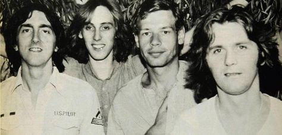

Cuando Robert Fripp le puso un alto a King Crimson en 1974 dejó huérfanas a dos grandes fuerzas rítmicas dentro del Prog: John Wetton y Bill Bruford. No es ninguna sorpresa que estos dos músicos continuaran trabajando juntos para luego formar una estrella fugaz dentro del rock progresivo, una banda que con poca historia que dejó una estampa clara en una fusión mágica entre rock, jazz y hasta elementos de disco.
U.K, el nombre de la banda en cuestión, surge en 1977 y suma a Eddie Jobson ( Roxy Music y Zappa) en teclados y violín eléctrico y a Allan Holdsworth (mayormente conocido por su trabajo en la banda de rock psicodélico Soft Machine) en guitarra. Se lo podría considerar como el primer supergrupo de Prog inglés, aunque de ninguna forma sería el único.
Me ha parecido necesario hacer esta pequeña reseña porque no es una banda tan reconocida (que no es lo mismo que popular) dentro del mundo de la música, y me resulta una muy buena entrada al mundo del Prog en una de sus expresiones más brillantes.
En términos reales U.K edita dos discos de estudio, su disco debút homónimo con sus cuatro miembros fundadores y en 1979 editan Danger Money, pero sin la presencia de Holdsworth ni de Bruford (este siendo reemplazado por Terry Bozzio) Para ser sincero preferiría centrarme en su primer disco: a pesar que Danger Money es otro gran disco del Prog no se asemeja al debut de la banda y las diferencias musicales se hacen bastante evidentes, y a su vez porque aunque Bozzio sea un gran baterista a Bill Bruford no hay con qué darle.
El disco comienza con una pieza dividida en tres partes In The Dead Of Night, By The Light of Day y Presto Vivace and Reprise. Aunque estén separados en tres, y se los puede escuchar por separado sin ningún inconveniente, es claro que están pensados como un sólo tema continuo. El disco arranca pateando duro con toda su potencia y con un riff que se repite en todos los temas, mostrando el lado más pesado de Holdsworth, y la base de Wetton y Bruford que es demoledora. El elemento errático que le suma un color único, y quizá de los más distintivos de la banda, es el uso de sintetizadores por parte de Jobson. Es una textura rápidamente reconocible que le añade ese carácter grandioso a lo que de otra forma sería una, muy buena, base proto metal. La conexión entre estos temas sigue con la métrica y el redondeo de la frase “By the light of day, In the dead of night” que bien se ve en Presto Vivace, y como dice el nombre, es un reprise de los temas ya sentados en In The Dead Of Night. Un círculo hermoso al que nos acostumbra este tipo de música.
Thirty Years tiene una letra que a quien haya escuchado Time le resultará conocida. Los primeros tres minutos y algo de la canción son una balada de texturas flotantes que acompañan la letra y Wetton mostrando todo su rango vocal, después tira todo por el aire y comienza un ritmo matador con todos los elementos de una épica, un sintetizador increíble cortesía de Jobson. La siguiente parte es un tanto difícil de describir, porque suena a mezcla de soundtrack película de acción de los 90’s con un látigo chicloso y queda un resultado de lo más alucinante. Como decía antes, todo se repite en un círculo con variaciones en ritmo y las mismas secciones vuelven a pasear pero siempre alteradas en su buena medida. El cierre del lado A del álbum es atronador, con uno de los temas más fuertes de la banda y con los sonidos más únicos. Thirty Years parece un tema mucho más reciente de lo que su cronología indica, una mezcla que ha envejecido mucho mejor que otras cosas de su época. Ya han pasado más de treinta años para Thirty Years…
El lado B comienza con Alaska, una obra instrumental donde Jobson pone a prueba su maestría sobre los sintetizadores, especialmente el Yamaha CS-80 que en esos días hacía su debut en el rock. La canción funciona como intro al segundo tema del lado B, Time to Kill. Me resulta llamativo que este tema no haya sido elegido como corte de difusión en un single, al menos como lado B. Es de los temas más “poperos” del disco, por una construcción relativamente sencilla y un sonido en la batería que tranquilamente pasa por una producción aislada de disco. Cuenta con un estribillo sencillo y memorable, tiene riffs de guitarra que lo destacan y hasta tiene una extensión menor a los cinco minutos, algo más que recomendable en el mundo de los éxitos de radio. Quizá una de las contras es la sección del medio donde tanto Holdsworth y Jobson sacan a lucir sus instrumentos y su proeza técnica, pero podría perdonarse que hubiesen hecho una edición radial un poco más corta. Teniendo todo esto en cuenta, Time to Kill es un buen tema que es la prueba de que U.K tenía talento para la experimentación y para los hits en igual medida.
Nevermore, la canción que da nombre a esta pequeña reseña, puede ser escuchada como una pieza perdida en el catálogo de King Crimson, como también lo es Thirty Years. Son los dos temas más extensos y más expansivos, los que menos buscan conformar a lo estándares cancioneros que para esta época ya estaban bien sentados.
Nevermore comienza con la única guitarra acústica que se escucha en todo el disco, algo que entre tanto sintetizador se comienza a extrañar un poco. Después vuelve esa batería de disco (parece que la tenían toda guardada para la segunda parte del álbum) pero que con los constantes cambios que Bruford incorpora nunca podría sentirse aburrido. A eso de los tres minutos comienza un pasaje instrumental que los tiene a todos en su salsa en su ritmo bien progresivo. El bajo de Wetton se destaca en compañía de la batería, y los teclados de Jobson haciendo juegos por todo el espectro. El zenit de la canción definitivamente es cuando vuelve la voz, y quien no piense en Starless se está perdiendo las mejores composiciones del rock. Lo interesante es que el tema no termina aquí ni alargan una parte tan satisfactoria. Tiene un lento descenso en tempo, pero volviendo con la letra de la primera sección, retomando las estructuras que había usado recientemente. Es como el final de quien no quiere que termine más, algo que se podría escuchar en una presentación en vivo de la banda. Si hay que quedarse con un sólo tema de la banda, que sea este, aunque Thirty Years compite palo a palo.
El último tema es Mental Medication, tema que en un principio no me fascinaba, pero que después de repetidas escuchadas le encontré aprecio, en especial a su letra y sus buenas rimas (Wetton no solo es talentoso con el bajo, como bien podemos comprobar aquí) A su vez, la voz armonizando con los teclados parece algo jazzero y medio baladesco. Un Frank Sinatra si le hubiesen gustado los aparatitos que hacen ruido. La sección rítmica que comienza a mitad de la canción tiene unas influencias de lo más variadas, casi como si le faltara algo de percusión para convertirse en murga con un violín eléctrico que le da un toque ecléctico de lo más entretenido.
U.K es un banda con talento de sobra, y esto se ve en cada una de las canciones del álbum. Es una lástima que no hayan podido seguir su carrera como cuarteto con estos músicos, aunque quizá por eso es que hoy en día podemos hablar de ellos como una de las mejores expresiones del rock progresivo inglés de los 70’s, un supergrupo que cumplió su cometido y después siguió con su vida.
